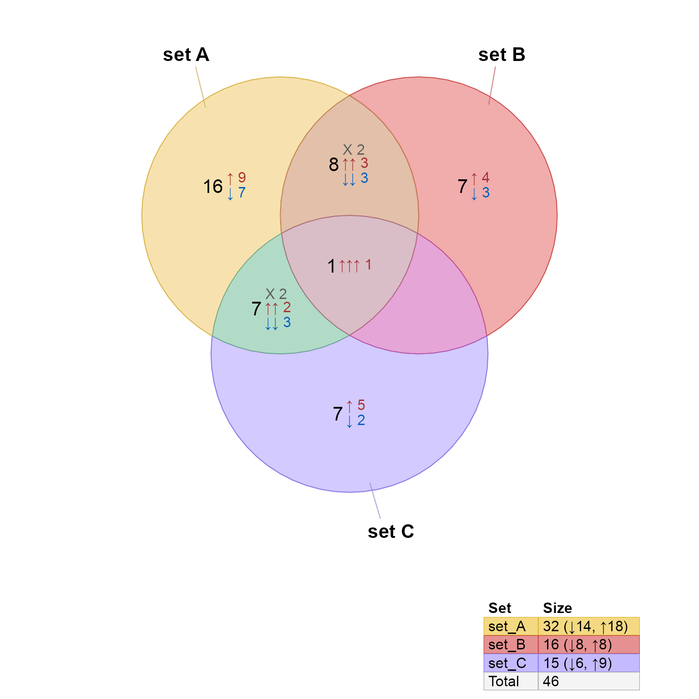

Directional Venn diagram
Usage
venndir(
setlist,
overlap_type = c("detect", "concordance", "each", "overlap", "agreement"),
sets = NULL,
set_colors = NULL,
setlist_labels = NULL,
legend_labels = NULL,
draw_legend = TRUE,
legend_signed = NULL,
legend_font_cex = 1,
proportional = FALSE,
draw_footnotes = TRUE,
show_labels = "Ncs",
main = NULL,
return_items = TRUE,
show_items = c(NA, "none", "sign item", "sign", "item"),
max_items = 3000,
show_zero = FALSE,
font_cex = c(1, 1, 0.75),
fontfamily = "Arial",
show_label = NA,
display_counts = TRUE,
poly_alpha = 0.6,
alpha_by_counts = FALSE,
label_style = c("basic", "fill", "shaded", "shaded_box", "lite", "lite_box"),
label_preset = "none",
template = c("wide", "tall"),
marquee_styles = NULL,
unicode = TRUE,
big.mark = ",",
curate_df = NULL,
venn_jp = NULL,
inside_percent_threshold = 0,
item_cex = 1,
item_style = c("default", "marquee", "text", "gridtext"),
item_buffer = -0.15,
item_degrees = 0,
sign_count_delim = " ",
padding = c(3, 2),
r = 2,
center = c(0, 0),
segment_distance = 0.05,
segment_buffer = -0.1,
show_segments = TRUE,
sep = "&",
do_plot = TRUE,
verbose = FALSE,
debug = 0,
circle_nudge = NULL,
lwd = 0.3,
rotate_degrees = 0,
...
)Arguments
- setlist
listof named vectors, whose names represent set items, and whose values represent direction using valuesc(-1, 0, 1).- overlap_type
charactervalue indicating the type of overlap logic:"each"records each combination of signs;"overlap"disregards the sign and returns any match item overlap;"concordance"represents counts for full agreement, or"mixed"for any inconsistent overlapping direction;"agreement"represents full agreement in direction as"agreement", and"mixed"for any inconsistent direction.
- sets
integerindex with optional subset of sets insetlistfor the Venn diagram. This option is useful when defining consistentset_colorsfor all entries insetlist.- set_colors
charactervector of R colors, or defaultNULLto use categorical colors defined bycolorjam::rainbowJam(). It will generate colors for every element insetlisteven when a subset is defined withsets.- setlist_labels
charactervector with optional custom labels to display in the Venn diagram. This option is intended when thenames(setlist)are not suitable for display, but should still be maintained as the original names.- legend_labels
charactervector with optional custom labels to display in the Venn legend. This option is intended when thenames(setlist)are not suitable for a legend, but should still be maintained as the original names. The legend labels are typically single-line entries and should have relatively short text length.- draw_legend
logicalpassed torender_venndir(), and stored in theVenndirmetadata.- legend_font_cex
numericscalar, default 1, used to adjust the relative size of fonts withvenndir_legender()whendraw_legend=TRUE. This value is stored inmetadatafor persistence.- proportional
logical(default FALSE) indicating whether to draw proportional Venn circles, also known as a Euler diagram. Proportional circles are not guaranteed to represent all possible overlaps. Proportional circles are determined by callingeulerr::eulerr(). Useshape="ellipse"foreulerr()to provide elliptical shapes.- draw_footnotes
logicalpassed torender_venndir_footnotes(), default TRUE, and stored in theVenndirmetadata. When TRUE, footnotes will be drawn if the exist in the 'metadata' slot of the Venndir object, which occurs only when there are overlaps which cannot be displayed due to the polygon geometry. Note that '...' ellipses are passed torender_venndir_footnotes()for arguments such asfootnote_styleand other customizations.- show_labels
characterstring to define the labels to display, and where they should be displayed. The definition uses a single letter to indicate each type of label to display, using UPPERCASE to display the label outside the Venn shape, and lowercase to display the label inside the Venn shape. The default"Ncs"displays _N_ame (outside), _c_ount (inside), and _s_igned count (inside).The label types are defined below:
_N_ame: "n" or "N" - the set name, by default it is displayed.
_O_verlap: "o" or "O" - the overlap name, by default it is hidden, because these labels can be very long, also the overlap should be evident in the Venn diagram already.
_c_ount: "c" or "C" - overlap count, independent of the sign
_p_ercentage: "p" or "P" - overlap percentage, by default hidden, but available as an option
_s_igned count: "s" or "S" - the signed overlap count, tabulated based upon
overlap_type("each", "concordant", "agreement", etc/)_i_tems: "i" only, by default hidden. When enabled, item labels defined by
show_itemsare spread across the specific Venn overlap region.
- main
characterstring used as a plot title, default NULL will render no title. When provided, it is rendered usinggridtext::richtext_grob()which enables some Markdown-style formatting. The title is stored invenndir@metadata$mainfor persistence.- return_items
logical(default TRUE) indicating whether to return items in the overlap data. WhenFALSEitem labels also cannot be displayed in the figure. The main reason not to return items is to conserve memory, for example ifsetlistis extremely large.- show_items
characterused to define the item label, only used when theshow_labelentry includes"i"which enables item display inside the Venn diagram."item": shows only the item labels"sign": shows only the sign of each item"sign items": shows the sign and item together (or"item sign"will show the item, then the sign).
- max_items
numeric(default 3000) indicating the maximum number of item labels to display when enabled.- show_zero
logical(default FALSE) indicating whether empty overlaps are labeled with count zero0. Whenshow_zero=TRUEthe count zero label is displayed, otherwise no count label is shown.- font_cex
numericvector recycled and applied in order:Set label
Count label
Signed count label(s)
The base font size is
16points, so the defaults become 16, 16, 12 for set, count, and signed count labels, respectively. The defaultc(1, 1, 0.75)defines the signed count label slightly smaller than other labels.When one value is provided, it is multiplied by
c(1, 1, 0.75)so the proportional values are all adjusted together.When two or more values are provided, the second value is used twice, to generate a vector with three values. This vector is multiplied by
c(1, 1, 0.75). The purpose is to allow adjusting the set font independently, or the counts independently, while keeping the relative size between Count and Signed count.When three values are provided, they are used as-is without change, which is the ideal way to define specific font sizes. For example,
c(1, 1, 1)will use the same 16-point font for all labels.
- fontfamily
characterstring to define the fontfamily. Default is "sans" because it should get mapped to a supported font for each graphics device, and any missing glyphs such as the Unicode upArrow and downArrow should be substituted with a suitable font with those glyphs. Thefontfamilymust match a font 'family' recognized by systemfonts. Usesubset_systemfonts()to review values in column 'family', orsystemfonts::font_info()to inspect possible font substitutions based upon weight, style, or other typography. These substitutions can be controlled in advanced, seesystemfonts::font_fallback()and related functions to define substitutions upfront as needed.In some circumstances, either the font or substitution is not compatible with PDF output, which tends to produce blank labels, presumably when the font encoded in the PDF is not available to the PDF viewer. You may check
grDevices::pdfFonts()for more information. A potential workaround is to embed the glyphs or fonts usinggrDevices::embedGlyphs()orgrDevices::embedFonts().The
raggdevices, andsvglitedevice, have the bestsystemfontssupport. RStudio works best with ragg output, which can be set with RStudio Options->General->Graphics then set 'Backend' to use 'AGG'. For ragg, tryragg::agg_png(),ragg::agg_tiff(),ragg::agg_jpeg(). For PDF, trycairo_pdf()orCairo::CairoPDF().The extreme fallback is to set
unicode=FALSE, thereby avoiding Unicode arrows. Further, usefontfacesand set all values to 'plain' to avoid using bold fonts.- poly_alpha
numeric(default 0.6) value between 0 and 1, for alpha transparency of the polygon fill color. This value is ignored whenalpha_by_counts=TRUE.poly_alpha=1is completely opaque (no transparency)poly_alpha=0.8is 80% opaque
- alpha_by_counts
logicalindicating whether to define alpha transparency to Venn polygon fill based upon the counts contained in each polygon. WhenTRUEthepoly_alphais ignored.- label_style
characterstring indicating the style for labels. Label color is adjusted based upon the determined background color, determined based upon the label fill color, and either the device background color, or Venn overlap fill color. There are pre-defined label styles."basic"no background shading"fill"an opaque colored background"shaded"a partially transparent colored background"lite"a partially transparent lite background"box"adds a dark border around the label region
- label_preset
characterdeprecated in favor ofshow_labels. This argument is passed tovenndir_label_style().- template
character(default "wide") describing the default layout for counts and signed counts. The value is stored invenndir@metadata$templatefor persistence."wide"- main counts on the left, right-justified; signed counts on the right, left-justified. This option is preferred for small numbers, and less-crowded diagrams."tall"- main counts, center-justified; signed counts below main counts, center-justified. This option is recommended for large numbers (where there are 1000 or more items in a single overlap region), or for crowded diagrams.
- marquee_styles
listwith optionalmarquee::style()objects, with each entry named by the inline tag to use. For example,list(cursive=marquee::style(family="Brush Script MT"))would create a new inline style 'cursive' which could be used like this:'{.cursive Some Cursive Text}'to apply that style.When provided,
marquee::classic_style()is used to create all basic HTML-like styles, then will be combined with additional styles present inmarquee_styles.- unicode
logical(default TRUE) indicating whether to display Unicode arrows for signed overlaps. Passed tocurate_venn_labels(). Useunicode=FALSEif the signed label is not displayed properly. The most common causes: (1) the R console (terminal) is not configured to allow Unicode (UTF-8 or UTF-16) characters; (2) the display font does not contain Unicode characters in the font set.- big.mark
character(default",") passed toformat()to augment numeric labels.- curate_df
data.frameorNULLpassed tocurate_venn_labels(), used to customize the formatting of signed overlaps.- venn_jp
NULLor optionalJamPolygonwhich contains one polygon for eachsetlist, intended to allow custom shapes to be used. Otherwiseget_venn_polygon_shapes()is called.- inside_percent_threshold
numeric(default 0) indicating the percent area that a Venn overlap region must contain in order for the count label to be displayed inside the region, otherwise the label is displayed outside the region. Values are expected to range from 0 to 100.- item_cex
numericdefault 1, used to define baseline font size (single value), or exact fontcexvalues (multiple values).When a single value is provided, each set of items is used to define a font scaling, based upon the relative area of the overlap polygon to the max item polygon area, and the number of items in each polygon. These values are multiplied by
item_cexto produce the final adjustment. These values are multiplied byitem_cex_factor.When multiple values are provided, they are recycled to the number of polygons that contain items, and applied in order. There is no further adjustment by polygon area, nor number of labels. These values are multiplied by
item_cex_factor.
- item_style
characterstring (default "text") indicating the style to display item labels when they are enabled."default"detects whether item labels contain"<br>"for newlines, and uses"gridtext"if that is the case, otherwise it uses"text"which is markedly faster."text"option is substantially faster, but does not allow markdown."gridtext": substantially slower for a large number of labels, but enables use of limited markdown by callinggridtext::richtext_grob(). Mostly useful forvenn_meme().
- item_buffer
numericvalue (default -0.15) indicating the buffer adjustment applied to Venn overlap regions before arranging item labels. Passed tolabel_fill_JamPolygon()viarender_venndir(). Negative values are recommended, so they shrink the region.- sign_count_delim
characterstring used as a delimiter between the sign and counts, whenoverlap_typeis not"overlap".- padding
numericpadding in units"mm"(defaultc(3, 2)) for overlap count, and signed overlap count labels, in order.- r
numericradius in units"mm"used for rounded rectangle corners for labels. Only visible whenlabel_presetincludes a background fill ("lite", "shaded", "fill"), or "box".- center
numericcoordinates relative to the plot bounding box, defaultc(0, 0)uses a center point in the middle (x=0) and slightly down (y=-0.15) from the plot center. It is used to place labels outside the diagram. In short, labels are placed by drawing a line from this center point, outward through the Venn overlap region to be labeled. The label is positioned outside the polygon region bysegment_distance. The defaultc(0, -0.15)ensures that labels tend to be at the top of the plot, and not on the left/right side of the plot. This argument is passed along tolabel_outside_JamPolygon().- segment_distance
numericvalue, default 0.05, the distance between outside labels and the outer edge of the Venn diaram region, relative to the size of the Venn polygons. The default0.05is approximately a 5% buffer outside. Note that when labels are placed outside (usingshow_labels) the outside label coordinates are used to define the plot range, which causes the Venn diagram itself to shrink accordingly.- sep
characterused as a delimiter between set names, the default is"&".- do_plot
`logical (default TRUE) indicating whether to generate the the figure.
When
do_plot=TRUEit callsrender_venndir()to creategridobjects to be displayed. Arguments in...are passed torender_venndir(): To hide display, usedo_draw=FALSE. To prevent callinggrid::grid.newpage()so the plot can be drawn inside another active display device, usedo_newpage=FALSE.When
do_plot=FALSEthe returnedVenndirobject can be passed torender_venndir()to render the figure. Same points are valid regardingdo_drawanddo_newpage, which are arguments
- verbose
logicalindicating whether to print verbose output.- debug
numericoptional internal debug.- circle_nudge
listofnumericx,y vectors. Not yet re-implemented after the version 0.0.30.900 update.- rotate_degrees
numericvalue in degrees, allowing rotation of the Venn diagram. Not yet re-implemented after version 0.0.30.900.- ...
additional arguments are passed to internal functions, notably:
render_venndir()for plot arguments.signed_overlaps()forkeep_item_orderwhen displaying item labels, otherwise items are sorted per overlap subset.get_venn_polygon_shapes()forseedforeulerr::euler()diagrams whenproportional=TRUE. Ultimately'...'is also passed through toeulerr::euler(), which has potential for custom optimization. Also seeeulerr::eulerr_options()for an alternative method to customize the Euler optimization.colorjam::rainbowJam()for categorical color definition, seepresetfor color wheel options: 'dichromat2', 'ryb2', 'ryb', 'rgb2', 'rgb'find_venn_overlaps_JamPolygon()forblend_presetwhich may offer different blending styles for Venn overlaps.
Value
Venndir object with slots:
"jps":JamPolygonwhich contains each set polygon, and each overlap polygon defined for the Venn diagram."label_df":data.framewhich contains the coordinates for each Venn set, and Venn overlap label."setlist":listas input tovenndir(). This entry may be empty.
When do_plot=TRUE this function also calls render_venndir(),
and returns the grid graphical objects (grobs) in the attributes:
"gtree": agrid::gTreeobject suitable for drawing withgrid::grid.draw(attr(vo, "gtre"))"grob_list": alistofgridobject components used to build the complete diagram, they can be plotted individually, or assembled withdo.call(grid::gList, grob_list). Thegrid::gListcan be assembled into agTreewith:grid::grobTree(gList=do.call(grid::gList, grob_list)"viewport": thegrid::viewportthat holds important context for the graphical objects, specifically the use of coordinategrid::unitmeasure"snpc", which maintains a fixed aspect ratio.
Details
This function takes 'setlist' list as input, produces a Venndir object
and plots the data by default.
When the input 'setlist' is a list of character vectors, it will
produce basic Venn overlap counts.
When the input 'setlist' is a 'list' of numeric vectors, the vector
element names are used as items, and the values are considered the
directionality, or "sign". The overlaps are tabulated and delineated
by the 'overlap_type' requested:
overlap_type="detect" - by default it will use "concordance" when the input data contains directionality.
overlap_type="concordance" - counts are organized as up/up or down/down, or "discordant".
overlap_type="each" - counts are organized by each combination of up/down for each overlap.
overlap_type="overlap" - counts are organized without using sign.
overlap_type="agreement" - counts are organized by "agreement" (up/up, or down/down), or "disagreement" (up/down, down/up).
Label options
The argument 'show_labels' is used to define which labels are displayed.
Labels are enabled using a single letter, defined below.
UPPERCASE places the label outside.
lowercase places the label inside the Venn diagram.
Note that some labels cannot be placed outside (item labels). Similarly, when item labels are enabled, counts cannot be displayed inside, and must be outside or hidden.
N- set _N_amec- _c_ount for each overlaps- _s_igned count for each overlapp- _p_ercent total items represented in each overlapi- _i_tem labels for those items within each overlap
Item labels
When item labels are enabled, the placement is defined by
label_fill_JamPolygon(), which uses an offset method, essentially filling rows of labels left-to-right, alternating higher/lower across each row.Items are sorted by sign if present, then by label.
To control the order that the signs are sorted, see
curate_venn_labels()and argumentcurate_dfto define custom order for each sign.For
venn_meme()item labels, they are displayed in the same order as provided.
Item label font size is adjusted by default for each overlap polygon, proportional to the available area relative to the total Venn area.
Item label font sizes can be customized using
item_cex.A single value will be applied to the auto-scaling font sizes, adjusting all fonts consistently.
Multiple values will be recycled across the total number of overlap regions, applying font size to each region as drawn in order.
Items can be rendered using
marquee::marquee_grob()(default) orgrid::grid.text().The default marquee interprets items as markdown, which enables text styling, line wrap, and potentially embedded images. Mostly, marquee offers the best support for Unicode arrows using whichever font is requested. Note that items use commonmark syntax, so to force line wrap, one must end a line with two spaces, then newline, for example:
"one line[space][space]\nsecond line"The potential benefit of
grid::grid.text()is speed, and that it displays items exactly as provided with no markdown interpretation. This function will not display all Unicode characters for all fonts, due to inconsistencies in how R fonts are supported. (It's a long history.)
See also
Other venndir core:
render_venndir(),
textvenn(),
venn_meme()
Examples
setlist <- make_venn_test(100, 3, do_signed=FALSE);
setlist <- make_venn_test(100, 3, do_signed=TRUE);
vo <- venndir(setlist)
jamba::sdim(vo);
#> rows cols class
#> jps 10 JamPolygon
#> label_df 21 32 data.frame
#> setlist 3 list
#> metadata 21 list
# custom set labels
vo <- venndir(setlist,
setlist_labels=paste("set", LETTERS[1:3]))

# custom set labels with Markdown custom colors
vo <- venndir(setlist,
setlist_labels=paste0("Set <span style='color:blue'>", LETTERS[1:3], "</span>"))
 # custom set and legend labels
vo <- venndir(setlist,
setlist_labels=paste0("set<br>", LETTERS[1:3]),
legend_labels=paste("Set", LETTERS[1:3]))
# custom set and legend labels
vo <- venndir(setlist,
setlist_labels=paste0("set<br>", LETTERS[1:3]),
legend_labels=paste("Set", LETTERS[1:3]))
 # custom set and legend labels
# proportional
# Set Name is inside with show_labels having lowercase "n"
vo <- venndir(setlist,
proportional=TRUE,
show_labels="ncs",
label_style="lite box",
setlist_labels=paste0("Set: ", LETTERS[1:3]),
legend_labels=paste("Set", LETTERS[1:3]))
# custom set and legend labels
# proportional
# Set Name is inside with show_labels having lowercase "n"
vo <- venndir(setlist,
proportional=TRUE,
show_labels="ncs",
label_style="lite box",
setlist_labels=paste0("Set: ", LETTERS[1:3]),
legend_labels=paste("Set", LETTERS[1:3]))